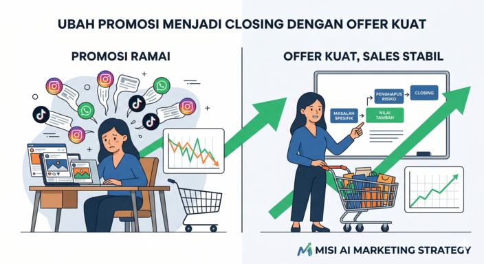

Promosi Ramai tapi Jarang Closing? Saatnya Evaluasi Offer Anda

Bayangkan skenario ini: Anda sudah menghabiskan waktu berjam-jam menyusun konten promosi. Anda mempostingnya di Instagram, TikTok, dan menyebarkannya via WhatsApp. Metrik reach dan engagement terlihat bagus. Beberapa calon pelanggan bahkan mengirim pesan untuk bertanya harga. Namun, setelah Anda membalas, percakapan berhenti di kata "terima kasih" atau "saya pikir-pikir dulu."
Anda sibuk melayani pertanyaan, tapi angka penjualan di akhir hari tidak bergerak. Rasa lelah mulai muncul karena Anda terus mencoba macam-macam strategi tanpa hasil pasti. Jika ini yang terjadi, masalah Anda kemungkinan besar bukanlah kurangnya jangkauan audiens. Akar masalahnya ada pada satu elemen krusial yang sering diabaikan: offer atau penawaran Anda kurang kuat dan kurang layak beli.
Berhenti Menyamakan Offer dengan Diskon
Banyak business owner pemula (solopreneur atau tim kecil) terjebak dalam pemahaman yang keliru. Ketika penjualan melambat, insting pertama mereka adalah memotong harga atau memberikan diskon besar-besaran. Sayangnya, perang harga adalah perlombaan menuju kehancuran.
Offer bukanlah sekadar potongan harga. Offer adalah keseluruhan nilai, solusi, dan pengalaman yang Anda tawarkan kepada target market Anda, ditukar dengan uang yang mereka bayarkan. Jika pesan marketing Anda hanya seputar "Diskon 50% Hari Ini", Anda tidak membangun alasan yang kuat mengapa mereka harus memilih Anda dibanding kompetitor. Di MISI, kami memegang prinsip Clarity over Chaos. Kejelasan nilai dari produk Anda jauh lebih penting daripada keributan promosi diskon yang membingungkan audiens.
Mengapa Calon Pelanggan Mengabaikan Offer Anda?
Sebelum kita membahas cara memperbaikinya, Anda perlu memahami mengapa offer Anda saat ini gagal mengkonversi leads menjadi sales.
- Target Market Kurang Spesifik: Anda mencoba menjual produk kepada semua orang. Akibatnya, nilai dari penawaran Anda terasa generik. Penawaran yang "lumayan bagus untuk semua orang" akan selalu kalah oleh penawaran yang "sangat sempurna untuk masalah spesifik saya".
- Hanya Menjual Fitur, Bukan Solusi: Calon pelanggan tidak peduli dengan fitur teknis produk Anda. Mereka peduli pada transformasi yang bisa produk Anda berikan. Jika Anda menjual pelatihan, mereka tidak membeli "10 video modul"; mereka membeli "kemampuan menghemat waktu kerja hingga 2 jam sehari".
- Risiko Pembelian Terasa Terlalu Besar: Jika calon pelanggan merasa takut produk Anda tidak sesuai ekspektasi dan uang mereka terbuang percuma, mereka akan menunda pembelian. Offer yang lemah tidak memiliki elemen penghapus risiko (risk reversal).
Cara Membuat Offer yang Kuat dan Layak Beli
Jika Anda ingin mengubah kondisi 'sibuk tapi belum jelas hasilnya' menjadi langkah eksekusi yang fokus, mari merombak cara Anda menyusun penawaran. Berikut adalah langkah taktisnya:
-
1
Petakan Masalah Utama Target Market Anda
Jangan menebak. Gunakan data atau interaksi harian Anda untuk mengetahui apa yang paling membuat frustrasi pelanggan ideal Anda. Apakah mereka mencari kepraktisan? Kecepatan? Atau keamanan? Offer yang kuat selalu lahir dari empati terhadap masalah pelanggan, bukan sekadar ego untuk menjual produk. -
2
Rangkai Nilai Tambah (Value Stacking)
Alih-alih menurunkan harga, tambahkan nilai. Apa yang bisa Anda sertakan bersama produk utama untuk membuat penawaran tersebut terasa sangat berharga? Misalnya, jika Anda menjual layanan desain, jangan sekadar menjual "1 logo". Jual sebuah paket: "1 Logo Premium, Panduan Penggunaan Warna, dan 3 Template Instagram Siap Pakai". Buat penawaran Anda terasa sangat menguntungkan. -
3
Berikan Garansi atau Penghapus Risiko
Calon pelanggan sering ragu karena takut salah beli. Atasi keberatan ini di awal. Berikan jaminan kualitas, layanan purna jual, atau dukungan teknis. Ketika Anda menghilangkan risiko dari pihak pembeli, probabilitas terjadinya closing akan meningkat tajam. -
4
Pertajam Pesan Marketing Anda
Offer yang brilian akan sia-sia jika dikomunikasikan dengan buruk. Pesan marketing harus tajam dan jelas. Hindari jargon teknis yang rumit. Sampaikan dengan bahasa yang lugas: Apa yang Anda jual? Siapa yang membutuhkannya? Apa hasil akhir yang akan mereka dapatkan?
Memanfaatkan AI untuk Menyusun Offer yang Tajam
Di sinilah banyak business owner salah langkah. Mereka berpikir menggunakan AI berarti meminta ChatGPT menulis caption jualan dengan bahasa yang bombastis. Kami tegaskan: kalau AI Anda baru dipakai untuk bikin konten, Anda belum benar-benar memakai AI untuk marketing.
Pendekatan AI Marketing Strategy yang benar adalah menggunakan AI sebagai mitra strategis. Anda dapat memasukkan data keluhan pelanggan, review kompetitor, atau tren industri ke dalam AI untuk menemukan celah pasar. AI dapat membantu Anda menyusun opsi penawaran yang relevan dengan metrik bisnis Anda (leads/sales), memvalidasi ide bundling, hingga mensimulasikan keberatan calon pembeli (common objections). Penggunaan AI harus relevan dan tidak sekadar gimmick.
Saatnya Merapikan Fondasi Marketing Anda
Anda tidak bisa membangun bisnis yang stabil hanya dengan mengandalkan keberuntungan di setiap promosi. Anda memerlukan sistem. Anda memerlukan offer yang sudah teruji, target market yang jelas, dan prioritas channel yang terarah.
Berhentilah menghabiskan energi Anda untuk mempromosikan penawaran yang belum matang. Mari kita ambil jeda sejenak untuk membenahi strategi inti bisnis Anda. Dengan penawaran yang kuat, setiap promosi yang Anda lakukan akan mendatangkan leads yang lebih berkualitas dan penjualan yang jauh lebih stabil.
Mari Hentikan Siklus Trial and Error
Membangun offer yang sulit ditolak membutuhkan objektivitas yang seringkali sulit dilakukan sendiri. Melalui MISI AI Marketing Strategy Sprint, saya siap mendampingi Anda membedah masalah bisnis, merumuskan offer yang berbobot, dan menyusun action plan 30 hari yang praktis.
Rapikan Fondasi Bisnis Saya Sekarang